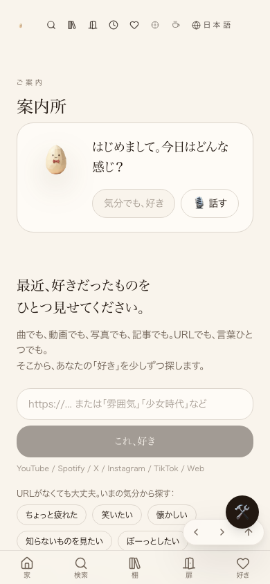
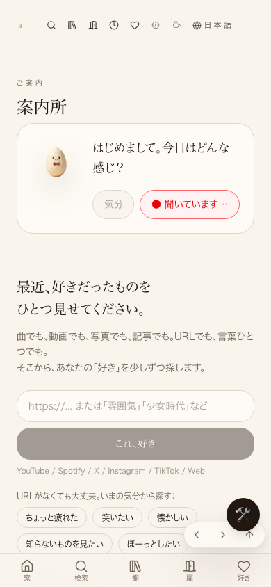
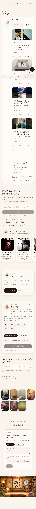
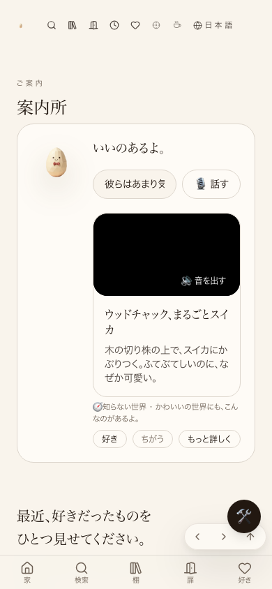
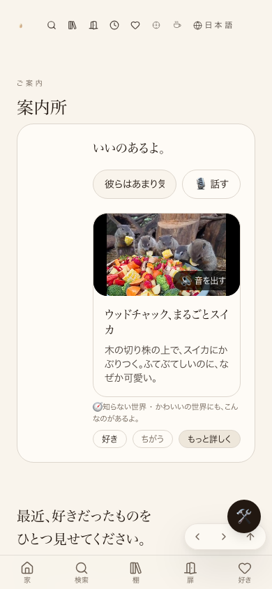
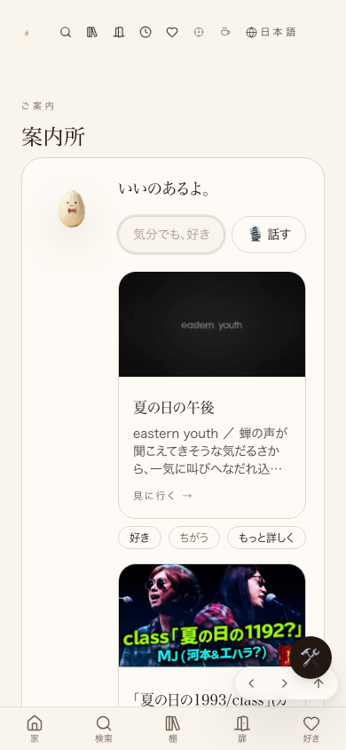

共有資料の一覧 ／ 確認ページ #794 案内所コンシェルジュ 作り直し
#794 案内所コンシェルジュ 作り直し
2026-09-15 22時台・4回目のセッションが自分でヘッドレスブラウザを操作して再確認（前回までの実装をコードは変更せず、実機相当の動作を再検証）
話すボタン無反応・1件しか出ない・別ページに飛ぶ・戻れない・卵が2匹、の5点はコード上すでに直っていて、今回あらためて自分でブラウザ操作をして実際に動くことを1つずつ確認した。ただしLovable本番への公開だけは、プラットフォーム側の障害でまだ止まっている。
唯一終わっていないこと：Lovable本番への反映。 コードはGitHubのmainに入っているが、Lovable側の「公開」がずっと失敗し続けている（2026-09-13の「Publishing was blocked due to suspicious activity」から継続、2026-09-08頃からビルド自体が通っていない疑いも浮上）。AI側で試せる操作（自動での公開ボタン押下・状態確認）は出尽くしており、これ以上はLovable側の障害調査待ち。詳しくは⑤の表を参照。
② 数字
1匹 卵の表示数(前:2匹)
5件 「猫」検索の結果数・安心4+知らない世界1(前:1件)
5件 「夏の日」検索の結果数
0件 型チェック(tsc)・lint(eslint)のエラー数
③ 実際に自分でボタンを押して確かめた記録（スクリーンショット）
①/cover-guideを開いた直後。卵は1匹だけ 
②「話す」を押すと「●聞いています…」に変わり反応する 
③「猫」で検索→5件表示(安心4+知らない世界1)。全体を撮ると縦に5枚並んでいるのが分かる 
④カードを押すとその場でインライン再生(URLが変わらない・別ページに飛ばない) 
⑤「もっと詳しく」を押した先の詳細画面
⑥ブラウザの「戻る」→ちゃんと案内所(/cover-guide)に戻る 
⑦「夏の日」で検索→5件表示 
④ 押せるリンク
⑤ 何をどう確かめたか
確認項目 結果 話すボタンが反応する（押すと録音状態になる） 直った 候補が4〜5件出る 直った（安心4件＋知らない世界1件＝5件を実測） カードがその場で再生される（別ページに飛ばない） 直った（URLが変わらずインライン再生の枠が出ることを確認） 「もっと詳しく」→戻ると案内所に戻る 直った（トップページには飛ばない） 卵が1匹になる 直った（案内所コンシェルジュの卵は画面内で1匹のみ） 話した内容が入力欄に文字で入る 直った（音声認識の結果を検索欄に反映してから検索する実装を確認） コード側の不具合（型チェック・lint） エラー0件 GitHub本体(main)への反映 反映済み（コミット a href="#note1"参照） Lovable本番への公開反映 まだ（プラットフォーム側の障害。下の注記参照）
⑥ Lovable本番がまだ直っていない理由（正直に書きます）
2026-09-13に「Publishing was blocked due to suspicious activity」というLovable側のブロックが発生し、それ以来ずっと本番への公開が失敗し続けている。2026-09-14からは「連打が原因では」という疑いで自動の公開試行も止めてあり、2026-09-15にも手動で状態を確認したが、公開の仕組み自体（ビルドパイプライン）が2026-09-08頃から通っていない可能性が高いところまで分かってきた。たまごさんがLovableの編集画面を開いて「公開」まわりのエラー詳細を見る、またはLovableのサポートに問い合わせる 必要がある。
自分でヘッドレスブラウザ(Playwright)を使い、たまごさんと同じ順番(開く→話す→猫→カード→もっと詳しく→戻る→夏の日)でローカル環境を実際に操作して撮影した(2026-09-15 22時台)。全ステップで期待どおりの動きを確認。型チェック(tsc --noEmit)・lint(eslint)もエラー0件。